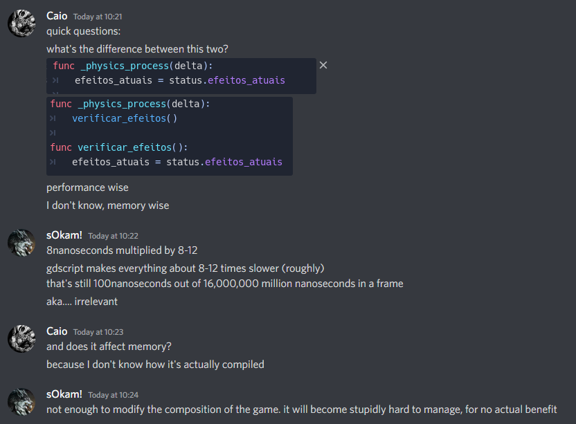

Execution
Frequency of calling '
_physics_process()
' and its execution order
-
NCarter: "Everything is called in sequence, it'll never run two process-type functions simultaneously.
-
The way
_physics_process()works is that the engine looks at how long the last frame worked and then runs a loop which calls_physics_process()as many times as is necessary to compensate. -
Normally your vsynced frame rate would be 60Hz and the default
_physics_process()rate is also 60Hz, so you just get one_physics_process()per frame. If you're actually running at 120Hz, you'll get two_physics_process()calls per frame (for each object). If you're running at 45Hz or something, you'll get a mixture of one and zero_physics_process()calls per frame. Like I say, these are called in a loop, so you get_processonce per frame and zero or more_physics_process()calls one after another in the same frame. It doesn't do anything fancy like try to space out the_physics_process()calls so that they are called at regular intervals in real time, so there is no way they can overlap each other for that reason. I think there's something in there to deal with snowballing_physics_process()cost, which would happen if_physics_process()is taking so much time up that it makes the frame take longer, and then even more_physics_process()calls are needed on the next frame. I think it has a maximum number of calls it will make in a single frame, and the consequence will be that the action slows down; it's that, or if the_physics_process()takes too long to call, then it stops rendering to catch up."
Execution time
-
 .
Notifications
Execution order
-
init > enter_tree > ready.
'set_deferred' and 'call_deferred' (Delay a task until the next frame)
-
set_deferredis used to change a property. Only 1 parameter can be passed.-
hitbox.set_deferred("disabled", true)
-
-
call_deferred("callable deferred") is used to call a 'callable' (function/method). Multiple parameters can be passed according to the number expected by the function/method.-
hitbox.call_deferred("explode_hitbox", 'hell yeah!', true)
-
-
A 'queue' is made before executing the task, waiting for the next frame to run it. This is important when altering a physics process of the engine or doing something extreme to a node.
-
Some examples where it might be important to use one of these methods:
-
queue_free(); -
Changing the shape of CollisionShapes2D or CollisionPolygons2D;
-
Toggle 'Monitoring', 'Monitorable', Layers, and Collision Masks.
-
-
Await
-
Create a timer in the script.
-
Use
awaitby creating a Timer and waiting for its 'timeout' Signal:-
This method creates a 'temporary Timer' at the top of the SceneTree containing this Node, while waiting for the 'timeout' Signal to indicate the Timer has ended, allowing the Script to continue from the
await. The 'temporary Timer' created by.create_timer()can only exist at the top of a SceneTree and is deleted automatically when its time ends. -
The
create_timertime is given in seconds. -
await get_tree().create_timer(0.2).timeout
-
-
Use
awaitwith an existing node while waiting for its Signal.
$AniPlayer.play('animation')
await $AniPlayer.animation_finished
-
Note: Timers created in the
SceneTreecannot be paused unless parameters of the.create_timer()call are changed.